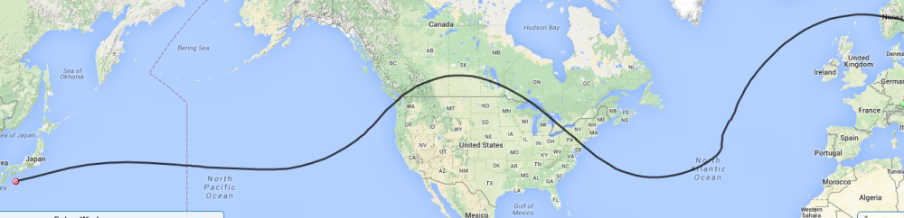

The balloon has reported in from Japan and is currently moving East toward the USA at 170 mph.
The link below will take you to the APRS screen to check on the balloon progress.
http://aprs.fi/#!mt=roadmap&z=13&call=a%2FK6RPT-12&timerange=604800&tail=604800
Here is my latest prediction for the balloon’s future travel. This is based on its current position in the Pacific and does show a safer path that does not take it far out of repeater range..

Don, AI6RE